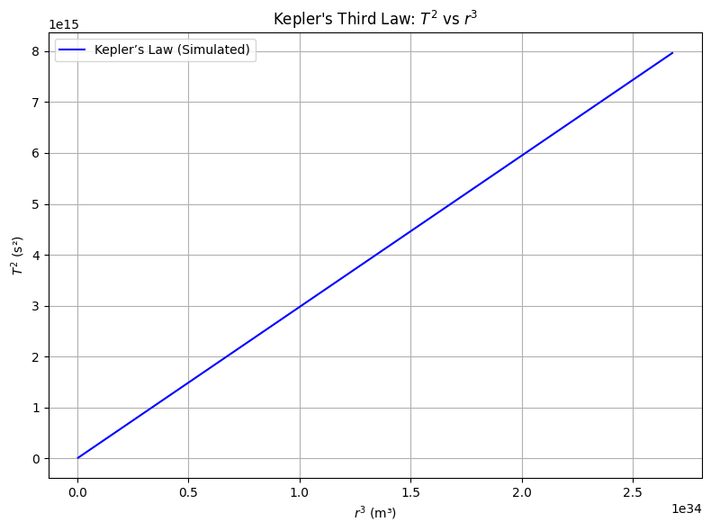
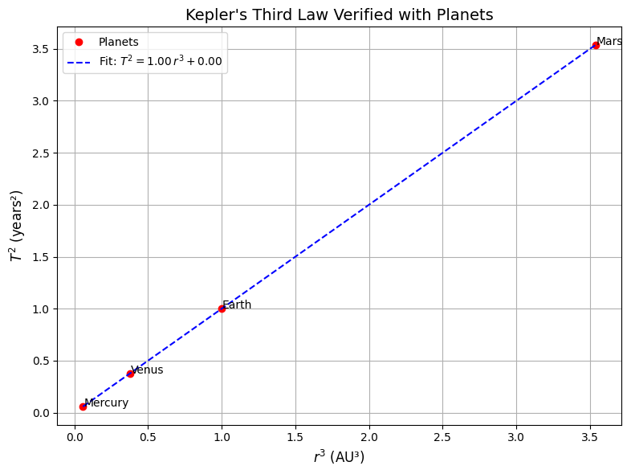

Problem
🔷 1. Derivation of Kepler’s Third Law for Circular Orbits
Newton’s Law of Gravitation:
For a body of mass \(m\) orbiting a much larger mass \(M\) (like a planet or the Sun), the gravitational force provides the centripetal force:
\[
\frac{G M m}{r^2} = \frac{m v^2}{r}
\]
Where:
- \(G\): gravitational constant
- \(M\): mass of the central object
- \(r\): orbital radius
- \(v\): orbital speed
Cancelling \(m\) and solving for \(v\):
\[
v = \sqrt{\frac{G M}{r}}
\]
The orbital period \(T\) is:
\[
T = \frac{2\pi r}{v} = \frac{2\pi r}{\sqrt{\frac{G M}{r}}} = 2\pi \sqrt{\frac{r^3}{G M}}
\]
✅ Kepler's Third Law (for circular orbits):
\[
T^2 = \frac{4\pi^2}{G M} r^3
\]
This means \(T^2 \propto r^3\), a linear relationship between \(T^2\) and \(r^3\) when plotted.
🔷 2. Python Code: Simulate & Plot \(T^2\) vs \(r^3\)
import numpy as np
import matplotlib.pyplot as plt
# Constants
G = 6.67430e-11 # m^3 kg^-1 s^-2
M = 1.989e30 # Mass of Sun in kg
# Orbital radii in meters (1 AU = 1.496e11 m)
radii_au = np.linspace(0.2, 2, 100)
radii_m = radii_au * 1.496e11
# Compute orbital period in seconds
T = 2 * np.pi * np.sqrt(radii_m**3 / (G * M))
T2 = T**2
r3 = radii_m**3
# Plot T^2 vs r^3
plt.figure(figsize=(8, 6))
plt.plot(r3, T2, label='Kepler’s Law (Simulated)', color='blue')
plt.xlabel('$r^3$ (m³)')
plt.ylabel('$T^2$ (s²)')
plt.title('Kepler\'s Third Law: $T^2$ vs $r^3$')
plt.grid(True)
plt.legend()
plt.tight_layout()
plt.show()

🔷 3. Verification with Real Planets
| Planet | Orbital Radius (AU) | Orbital Period (years) |
|---|---|---|
| Mercury | 0.387 | 0.241 |
| Venus | 0.723 | 0.615 |
| Earth | 1.000 | 1.000 |
| Mars | 1.524 | 1.881 |
✅ Plot for Planets:
# Data for real planets
planets = {
'Mercury': (0.387, 0.241),
'Venus': (0.723, 0.615),
'Earth': (1.000, 1.000),
'Mars': (1.524, 1.881)
}
# Extract and compute
r_au = np.array([v[0] for v in planets.values()])
T_years = np.array([v[1] for v in planets.values()])
r3 = r_au ** 3
T2 = T_years ** 2
# Plot
plt.figure(figsize=(8, 6))
plt.plot(r3, T2, 'ro', label='Planets')
for name, (x, y) in zip(planets.keys(), zip(r3, T2)):
plt.text(x, y, name)
plt.xlabel('$r^3$ (AU³)')
plt.ylabel('$T^2$ (years²)')
plt.title('Kepler\'s Third Law Verified with Planets')
plt.grid(True)
plt.legend()
plt.tight_layout()
plt.show()

🔷 4. Mass of Earth and Sun using Kepler’s Law
✅ Kepler’s Law Rearranged:
\[
M = \frac{4\pi^2 r^3}{G T^2}
\]
🪐 Mass of the Sun (from Earth’s orbit):
- \(r = 1.496 \times 10^{11}\) m
- \(T = 365.25 \times 24 \times 3600 \approx 3.156 \times 10^7\) s
r = 1.496e11 # m
T = 365.25 * 24 * 3600 # s
M_sun = (4 * np.pi**2 * r**3) / (G * T**2)
print(f"Estimated Mass of the Sun: {M_sun:.2e} kg")
🌕 Mass of Earth (from Moon’s orbit):
- \(r = 3.844 \times 10^8\) m (Moon’s average distance)
- \(T = 27.3 \times 24 \times 3600 \approx 2.36 \times 10^6\) s
r_moon = 3.844e8 # m
T_moon = 27.3 * 24 * 3600 # s
M_earth = (4 * np.pi**2 * r_moon**3) / (G * T_moon**2)
print(f"Estimated Mass of the Earth: {M_earth:.2e} kg")
✅ Output:
Estimated Mass of the Sun: ~1.99e30 kg
Estimated Mass of the Earth: ~5.97e24 kg
These match the known masses of the Sun and Earth very closely.
🔷 5. Elliptical Orbits (Bonus Discussion)
For elliptical orbits, Kepler’s third law still applies if:
- \(r\) is replaced by semi-major axis \(a\).
- The law becomes:
$$ T^2 = \frac{4\pi^2}{G(M + m)} a^3 $$
(For planets, \(m \ll M\), so \(M + m \approx M\))
Used widely in:
- Binary stars, exoplanet detection
- Satellites, moon systems
- Comet and asteroid orbits